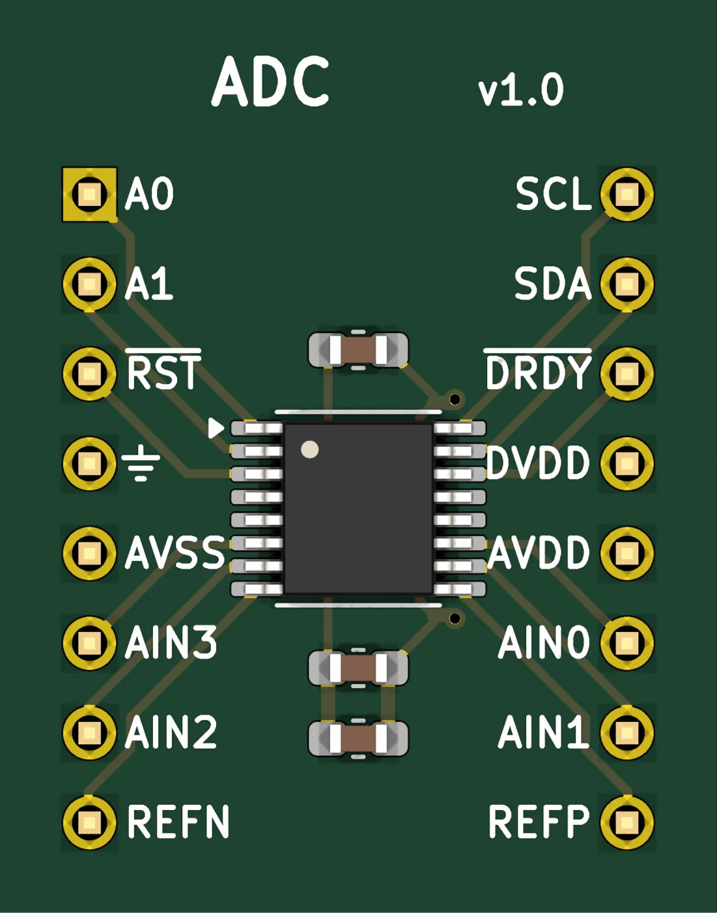
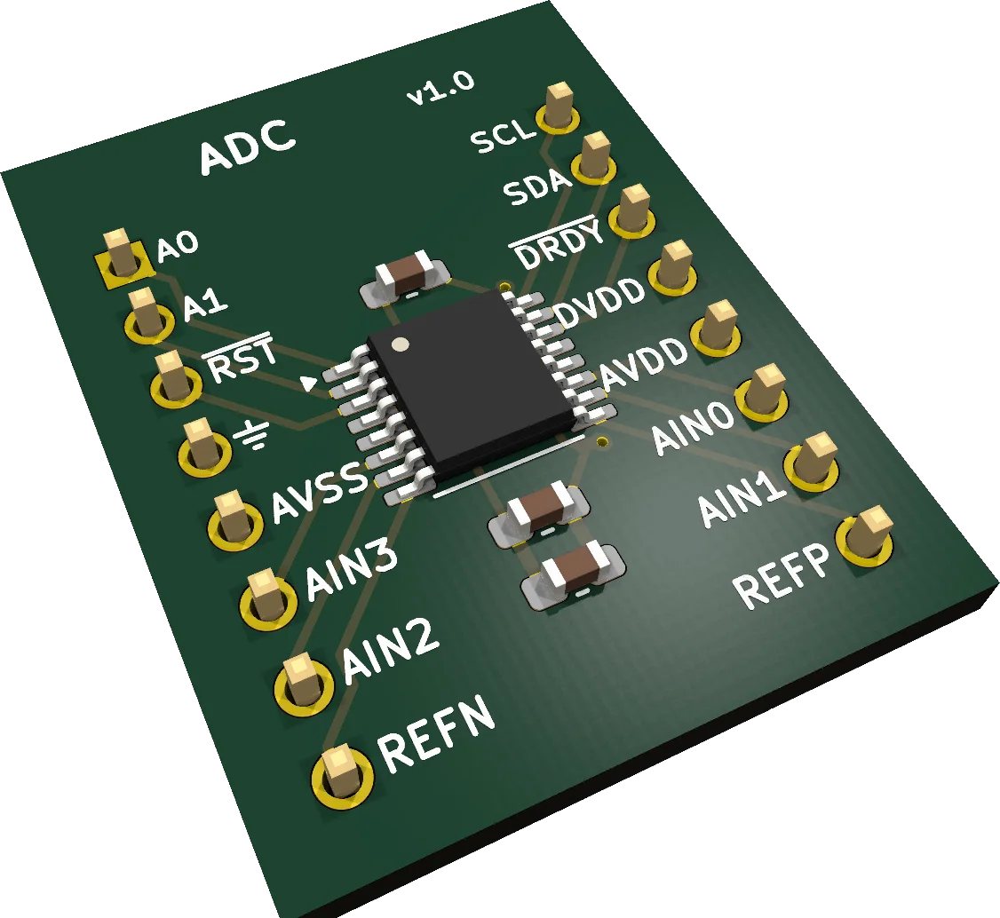
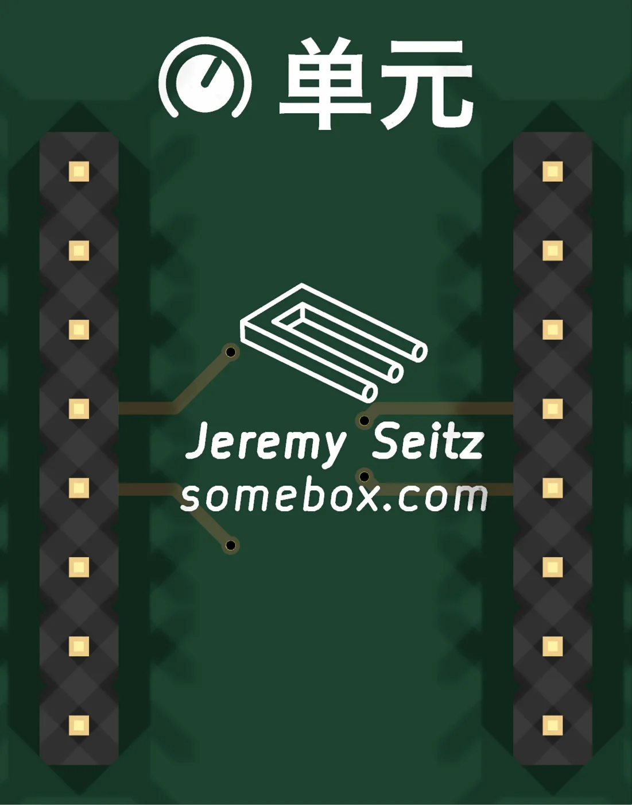
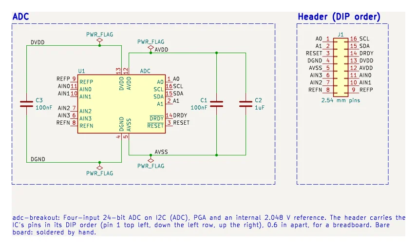

24-bit ADC breakout: four inputs over I2C
A four-input 24-bit ADC with I2C, a programmable gain amplifier and an internal reference, on a 0.6 in wide header.
A breakout for a 24-bit ADC with four inputs, an I2C interface, a programmable gain amplifier and an internal 2.048 V reference. It is the converter on the test rig's CV input board, the rig's voltmeter, and as with the DAC I wanted to try it on a breadboard before the rig boards are made.
Same format as the other chip breakouts: a board 0.8 in wide, the pins on two rows of 2.54 mm header 0.6 in apart in DIP order, named beside their pads. The analog and digital supplies have their own pins, and the analog ground sits right beside the digital one, so on a single supply they can be tied together at the header, as the datasheet asks. Bare, soldered by hand. Not built yet.
- Status
- Being made
- Version
- v1.0 (2026-10-26)
- Board
- 20.32 × 25.82 mm, 2 layers
- First order
- 5 on a snap-apart panel with the other IC breakouts, bare
- Progress
- follow its tracking issue



What it does
- Four inputs, AIN0 to AIN3, 24-bit, read over I2C, with a programmable gain amplifier.
- Analog supply AVDD 2.3 to 5.5 V to AVSS; digital supply DVDD 2.3 to 5.5 V to DGND.
- For bipolar inputs, AVSS at −2.5 V and AVDD at +2.5 V.
- An internal 2.048 V reference that needs nothing, or an external reference on REFP and REFN.
- 100 nF and 1 µF on AVDD, 100 nF on DVDD.
- Sixteen addresses, 0x40 to 0x4F: A0 and A1 each tied to DGND, DVDD, SDA or SCL (both to DGND: 0x40).
- 2 × 8 pins on a 2.54 mm pitch, rows 15.24 mm (0.6 in) apart.
- 20.32 × 25.82 mm, 0.8 in wide.
Pins
| A0 | SCL |
| A1 | SDA |
| RST (active low) | DRDY (active low) |
| DGND | DVDD |
| AVSS | AVDD |
| AIN3 | AIN0 |
| AIN2 | AIN1 |
| REFN | REFP |
Wiring and setup
- The header goes underneath, long pins down, soldered from the front.
- On a single supply, tie AVSS to DGND right at the header: pins 4 and 5 sit side by side.
- Tie RST to DVDD.
- Pull-ups of 2.2k to 10k from SDA and SCL to DVDD unless the bus has them, and one on DRDY (open drain) if you use it.
- REFP and REFN can also take a bridge sensor's excitation, for ratiometric readings.
Limits and open questions
- Not built yet.
- A fine-pitch surface-mount chip: hot air is the easier way to solder it.
Development notes
- It comes on the snap-apart chip panel, bare, so I can learn the converter before the rig's input board is made.
Schematic
The schematic as drawn, with each chip named by its function rather than its part number. The design isn't open source yet, so there are no files to download.


Would you use a ADC? A thumbs-up on its tracking issue is how I count interest, and you can subscribe there to follow its bring-up. Questions and ideas go to the discussions.